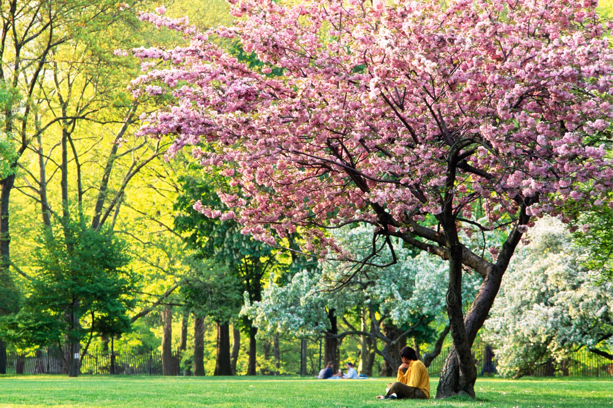

What activities can you do throughout spring in Montana?
Spring time in Montana is when wildlife starts to reappear and weather warms up. As the the weather starts to warm the fish start to reappear, and the world of flyfishing in Montana comes to life. Flyfishing is Montana's most popular recreational activity, as Montana is known for world class rainbow and brown trout. Not only does fishing get popular, but activities like golf and frisbee golf blow up in the warm weather. Montana is known to have one of the most beautiful golf courses just south of Butte, called Rock Creek Cattle Company. There are also hundreds of frisbee golf courses across the state, which any sort of people to get out and get some fresh air with some friends. Another way people get outside and enjoy the outdoors, is hiking. All state owned land provides legal hiking for all residents. There are also hundreds of city, state and national parks that provide hiking trails for people of all abilities, ranging from the casual citizen to the experienced hard core hikers. Places like Yellowstone and Glacier provide some of the most beautiful hiking in the country. Another recreational activity that is very popular is white water rafting. There are hundreds of rivers and streams that provide white water for people seeking an adreneline buzz.
Follow the links to the left, to explore some of Montana's spring activities